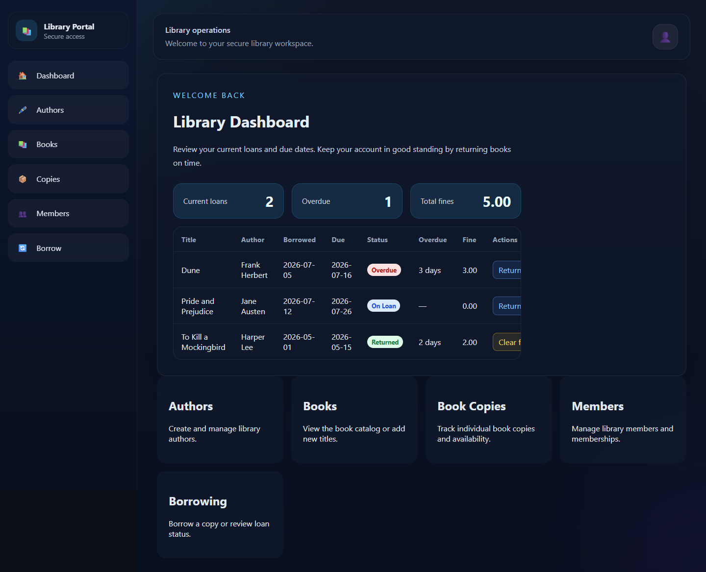
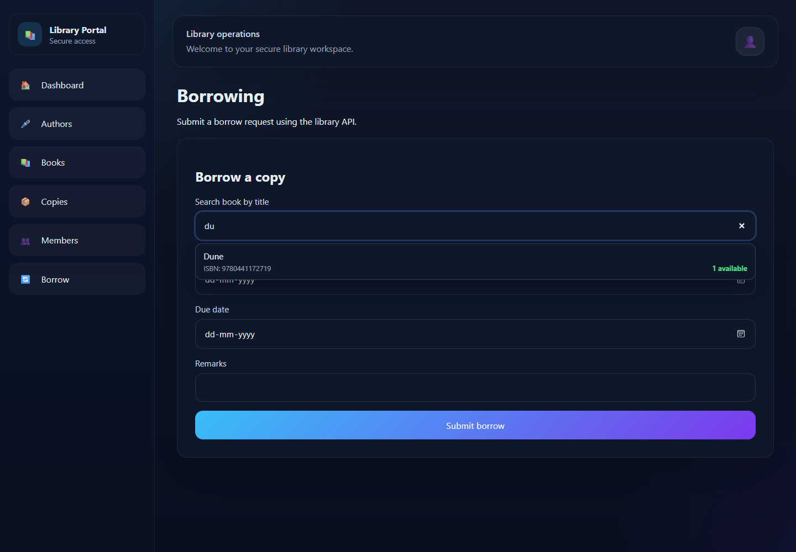
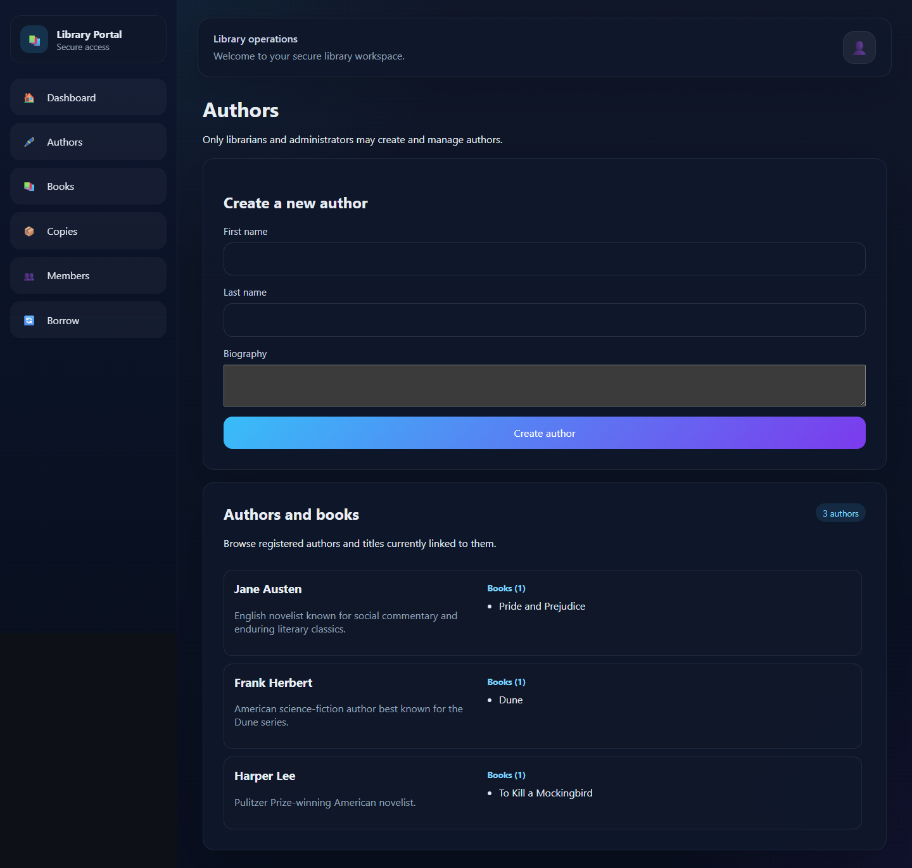
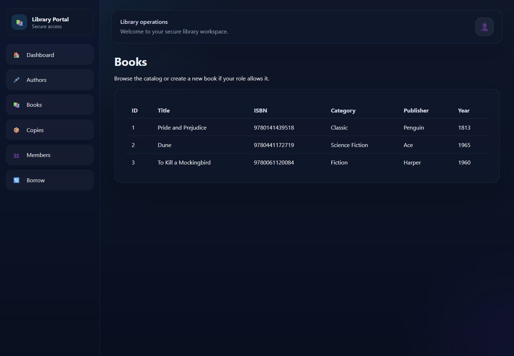
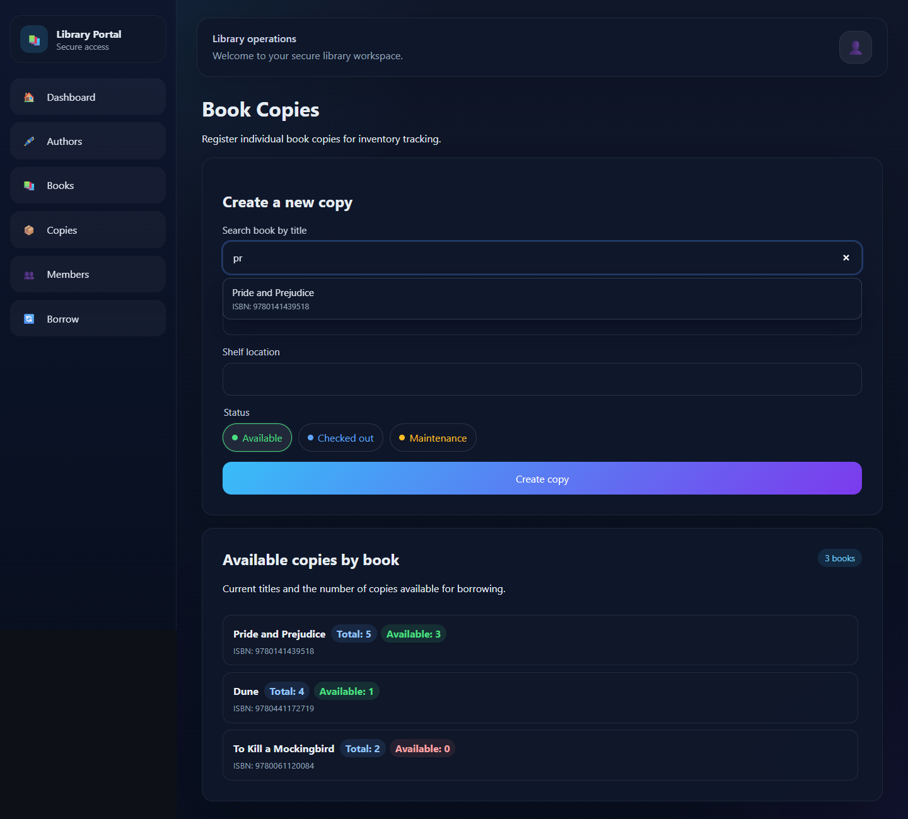
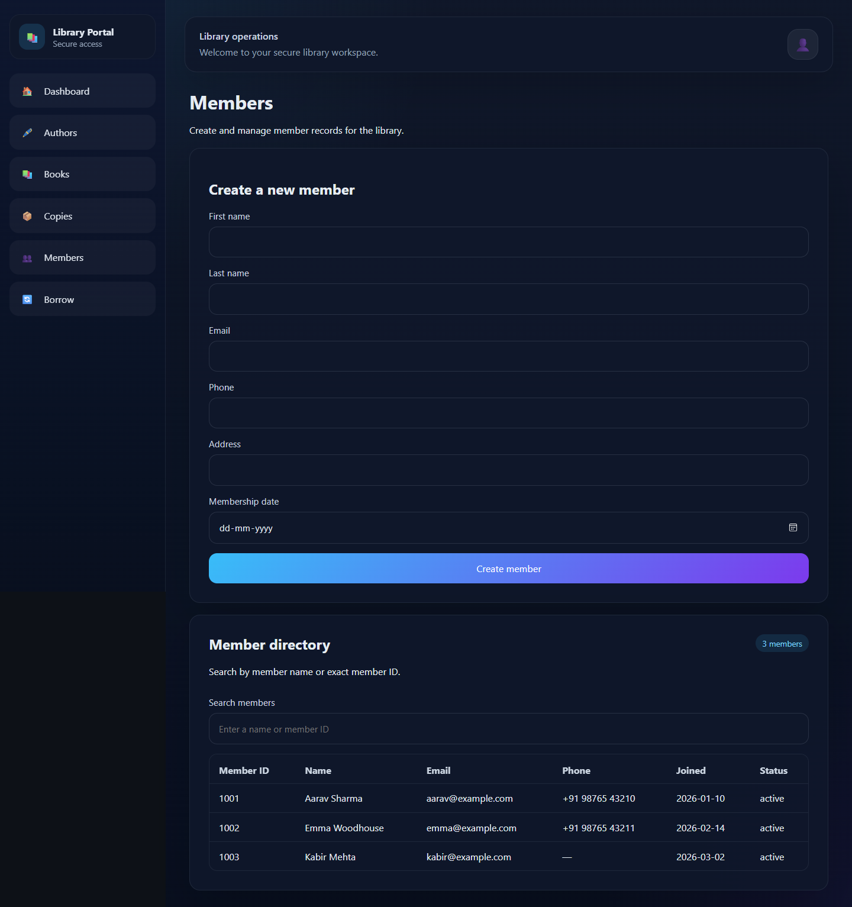

A complete walkthrough of catalog management, copy inventory, member operations, self-service borrowing, returns, overdue fines, availability, security, and API integration.
Authors, books, ISBN metadata, title search, and author-filtered views.
Barcode-level physical copies, statuses, total counts, and live availability.
Role-controlled registration, searchable member directory, and account linking.
Availability-aware borrowing, due dates, personal history, and one-minute refresh.
Self-service returns that finalize fines and restore copy availability atomically.
JWT bearer tokens, protected endpoints, record ownership, and role authorization.
gRPC provides service-to-service operations using the protobuf contract in app/grpc/library.proto.
Behave scenarios execute against isolated SQLite, protecting development data while validating services and HTTP flows.
| Capability | Student | Librarian | Administrator | Visitor |
|---|---|---|---|---|
| Browse books and availability | Yes | Yes | Yes | Yes |
| View personal dashboard | Yes | Yes | Yes | Authenticated view |
| Borrow / return own copies | Yes | Yes | Yes | No |
| Create authors and books | No | Yes | Yes | No |
| Register copies | No | Yes | Yes | No |
| Create/search members | No | Yes | Yes | No |
REST borrowing never trusts a client-provided member ID. It derives the member from the authenticated email and creates the linked member record on first borrow when required.

borrowedavailableOutstanding fine = overdue days × 1.00. Active overdue fines are calculated dynamically; returned-loan fines stop accruing and can be cleared.



The clickable Books (n) relationship opens the catalog filtered by author_id.


http://localhost:8000/docs
/redoc provides reference-oriented documentation./openapi.json exposes the machine-readable OpenAPI document for code generation and integrations.
Authorization: Bearer <access_token>
| Method | Path | Purpose | Access / parameters |
|---|---|---|---|
| GET | /health | Service health | Public |
| POST | /token | Authenticate and return JWT + roles | Public; email/password body |
| GET | /authors | Alphabetical author list | Authenticated |
| POST | /authors | Create author | Librarian/admin |
| GET | /books | List and search catalog | search, author_id |
| POST | /books | Create bibliographic record | Librarian/admin |
| GET | /books/{book_id} | Get one book | Authenticated |
| GET | /books/availability | Total and available copies per title | Optional search |
| POST | /copies | Create barcode-level copy | Librarian/admin |
| Method | Path | Purpose | Rules |
|---|---|---|---|
| GET | /members | List/search members | Librarian/admin; name or exact ID search |
| POST | /members | Create member | Librarian/admin; unique email |
| POST | /borrow | Borrow by book or copy | Member comes from authenticated email |
| GET | /me/borrows | Personal loan history | Includes status, overdue days, fine, title, author |
| POST | /me/borrows/{id}/return | Return owned loan | Finalizes fine and restores availability |
| POST | /me/borrows/{id}/clear-fine | Clear returned-loan fine | Loan must be returned and owned by caller |
The path ID alone is insufficient. The service filters by both borrow_id and the member resolved from the current token, preventing cross-member return or fine operations.
POST /borrow
Authorization: Bearer <token>
Content-Type: application/json
{
"book_id": 2,
"borrow_date": "2026-07-19",
"due_date": "2026-08-02",
"remarks": "Optional note"
}{
"borrow_id": 41,
"copy_id": 7,
"member_id": 1001,
"borrow_date": "2026-07-19",
"due_date": "2026-08-02",
"return_date": null,
"fine_amount": 0,
"remarks": "Optional note"
}book_id or copy_id.member_id is deliberately excluded from the request.statusoverdue_daysfine_amountbook_titlebook_authorreturn_date{
"error": {
"code": "invalid_data",
"message": "Due date cannot be before the borrow date",
"details": {
"borrow_date": "2026-07-19",
"due_date": "2026-07-18"
}
}
}401 unauthenticated403 forbidden404 not found409 conflict422 validation
User ↔ user_roles ↔ Role separates login authorization from library membership while linking them through email in REST self-service workflows.
Unique user/member emails, ISBNs, API keys, role names, and copy barcodes prevent ambiguous identities and inventory records.
BDD scenarios
Passing steps
Failures
Catalog search/filter, availability, member search, auto-linking, borrowing validation, overdue fines, returns, clearance, ownership, authentication, RBAC, HTTP flow, conflicts, and missing records.
Behave sets TEST_DATABASE_URL to SQLite, recreates test tables, seeds test identities, and never clears the configured development PostgreSQL database.
cd backend behave --no-capture cd ../frontend npm run build
The platform connects discoverable catalog data, real copy availability, secure self-service circulation, and operational member tools through a documented and tested API.
Swagger: /docs
OpenAPI: /openapi.json
behave --no-capture